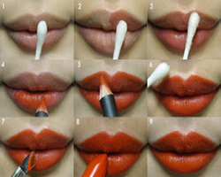

Lips makeup tips

Want to make your lips appear plumper and natural? Here are some easy lips makeup tips to get the plumper looks:
1. First apply a lip balm on your lips to keep them hydrated and to prevent them from cracking.
2. Use a sharpened lip liner that matches your lip color and line your lips.
3. Use a brush to apply lipstick or lip-gloss.
4. Blot your painted lips lightly with a tissue.